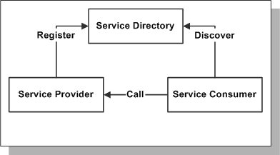

Slug: bus_svc_overview
面向服务的架构预览
服务的概念已经出现了很长时间，但面向服务的概念相对是比较新的。面向服务的架构是一种有助于降低应用耦合的一种构建应用的风格，独立管理的组件可以被重用和重新安排到其它完整功能的应用中。SOA提供下面的功能：
-
构建和注册服务的能力
-
使用户发现和调用服务的能力
-
执行服务的平台
下面的图演示了SOA的基本概念：
SOA的基本概念

使用面向服务的架构你可以：
-
容易的将Oracle Applications和其它的应用集成
-
影响已经部署的应用保护现有投资
-
容易适应更多的需求
服务预览
服务在EBS的开发、测试、分类、公共安全和私有接口架构中是一个关键组件。开发者使用统一的指导方针和实现方式来创建服务，然后当它们控制源代码时被自动发布到集中的接口仓库。
服务时自描述的，独立的组件可以被部署为web service、EJB session beans或作为共设的Java API（与客户端被部署在同一个JVM中）。服务接口根据用途分为多种不同的类型。Oracle支持业务对象服务。
业务对象是自包含的代表了真实世界的业务领域对象：一个文档、一个地方、一个人或一件事。从实现的角度来说，业务对象包含一个或多个视力对象（VO）映射到下层的复合实体（EO）（子实体不能没有父对象）。比如，在OA Framework Toolbox Tutorial中采购单业务对象包含了一个头部信息并带有一行或多行明细，每个包含一个或多个供货。供货不能离开明细行独立存在，明细行不能没有头信息。（供货和行是子业务对象组件）。如果删除头，将删除所有的行和供货。通常业务对象视图对象和下层实体对象的区别在于视图对象中出现外键属性，比如定单中的供应商名称。
下面的摘要是使用业务对象服务的情况：
-
业务－业务的集成
-
应用－应用的集成（服务－服务）
-
BPEL
-
数据导入、导出和同步
-
富客户端报表框架，比如XML Publisher
-
支持SDO标准
-
实时数据的企业安全搜索（Secure Enterprise Search of real-time data）
自动创建Web Services
术语
| 业务对象（Business Object） | 自包含的 |
|---|